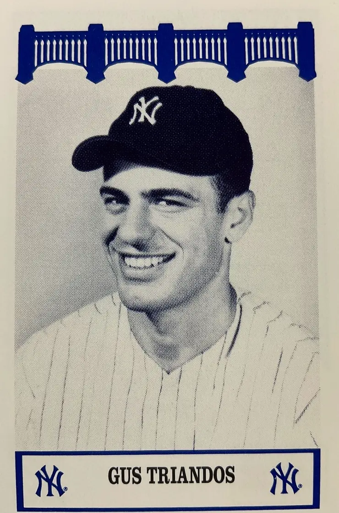

Gus Triandos "The Big Bear"
Career Highlights & Facts
(Facts are AI-generated and may require verification)
- Caught a no-hitter thrown by a pitcher famous for a signature knuckleball.
- Used an oversized 45-inch catcher's mitt to handle erratic pitches.
- Selected for 4 All-Star Games during a career spent primarily behind the plate.
Would you like to find out more about Gus Triandos?
Player Biography
Gus Triandos
January 4, 2012
/
in
BioProject - Person
1950s All-Stars
1964 Philadelphia Phillies
/
by
admin
This article was written by
Neal Poloncarz
In 1954 Gus Triandos, a powerfully built catcher who hit a lot of home runs, was languishing in the New York Yankees’ farm system. To the one-year-old Baltimore Orioles, a team that had a severe shortage of talent, Triandos seemed plenty good enough. And he was: After being sent to the Orioles in a blockbuster trade, Triandos spent eight years with the Orioles, hit 142 home runs, and played in four All-Star Games. The big catcher played for the Phillies in 1964 and part of ’65, and proved to be a valuable backup catcher.
“Tremendous Triandos”
1
…
“
a rugged Greek with a brawny look and a plodding gait,”
2
was born Constandos Triandos in San Francisco on July 30, 1930. Gus was one of four children of Greek immigrants Peter, a tanner, and Helen (Mourgous) Triandos (Try’-andos).
At Mission High School in San Francisco, Triandos played baseball and basketball. The Bay Area was fertile baseball terrain for the Bronx Bombers. “A lot of Bay Area guys had been signed by the Yankees,” Triandos recalled. “Guys like DiMaggio, (Tony) Lazzeri, Frankie Crosetti, Lefty Gomez, and Lefty O’Doul all went on to have great careers. So it was pretty natural that if there was one major-league team we followed out here it was the Yankees.”
3
Triandos had always been a third baseman but switched to catcher in his final year of high school.
4
He was signed by Yankees scout Joe Devine at the age of 18 in 1948 for a $2,500 bonus. For the next seven years, including a hitch in the military in 1952, he labored through the Yankees’ farm system.
Triandos began his minor-league career in 1948 in Twin Falls, Idaho, in the Pioneer League (Class C), where he hit .323 with 85 RBIs. Back at Twin Falls the next season, he ripped the cover off the ball in his first 40 games, with an average of .435 and 10 home runs, and was promoted to the Norfolk Tars of the Piedmont League (Class B). He spent most of 1950 with Amsterdam (New York) in the Class C Canadian-American League, where he hit a glittering .368.
In 1951 Triandos was drafted into the US Army. He played on the baseball team at the Brooke Army Medical Center in San Antonio, Texas. After his discharge he was sent for the 1953 season to the Birmingham Barons of the Double-A Southern Association, where he was called “Tremendous Triandos” because of his 6-foot-3-inch, 215-pound frame and his.368 batting average with 19 home runs in 97 games playing first base.
Called up by the Yankees, the 23-year-old Triandos made his big-league debut at Yankee Stadium against the St. Louis Browns on August 3. Playing first base and batting sixth, Triandos got his first major-league hit, an RBI double, off Bob Cain. Two days later he hit his first major-league homer, off the Tigers’ Billy Hoeft.
Unfortunately for Triandos, the Yankees were deep in talent in 1953. They had perhaps the best catcher in the major leagues in Yogi Berra. At first base they had Joe Collins and Johnny Mize. It was difficult for Triandos to find playing time. He started 12 games as a first baseman and two games as a catcher and got only 51 at-bats.
In 1954 Triandos was sent down to Kansas City, the Yankees Triple-A affiliate. Back behind the plate, he hit .296 with 18 home runs and got into two September games for the Yankees. After the season he played with Almendares in the Cuban winter league and enjoyed it. He considered making a living playing in the Pacific Coast League during the summer and in Cuba during the winter. Then the big trade came. …
On November 17 1954, the Yankees and Orioles engineered a 17-player trade, the largest two-team swap in major-league history. The Yankees sent Triandos, Gene Woodling, Harry Byrd, Jim McDonald, Hal Smith, Willy Miranda, Bill Miller, Kal Segrist, Don Leppert, and Ted Del Guercio to Baltimore for Bob Turley, Don Larsen, Billy Hunter, Mike Blyzka, Darrell Johnson, Jim Fridley, and Dick Kryhoski. (Fan reaction was mostly negative in Baltimore because “Bullet Bob” Turley, the Orioles’ presumed ace pitcher, was included in the trade.)
Triandos played mainly first base in 1955 for his new team, as Hal Smith handled the bulk of the catching.
5
Gus hit .277 with 12 home runs and 65 RBIs and, though no speedster on the bases, legged out three triples. Triandos led the seventh-place Orioles with a modest 12 homers, twice as many as any teammate.
For the 1956 season the power alleys at the vast Memorial Stadium were shortened by 25 feet. On the advice of Ted Williams, Triandos switched to a lighter bat and increased his home run total to 21. As he matured, the Orioles traded away Hal Smith and Triandos became the starting catcher. He came under the tutelage of the visionary manager Paul Richards, who as the skipper of the Chicago White Sox had molded Sherm Lollar into one of the best catchers in the American League. In Baltimore he undertook the same labor with Triandos.
6
Behind the plate, Triandos would never be as agile as Lollar, but his strong throwing arm nailed two-thirds of opposing basestealers in 1957.
7
Many clubs sacrificed hitting for defense with catchers. Triandos combined real power with catching.
8
From 1956 through 1961 he averaged almost 40 extra-base hits a season. An appreciative Richards proclaimed, “Gus is the best catcher in either league.”
9
In 1957 Triandos continued to pound the baseball and handled the up-and-coming “Baby Birds” pitching staff as the Orioles finished at .500 for the first time. He hit 19 home runs and had 72 RBIs. He was selected for the American League All Star team, though he didn’t get into the game. After the Fourth of July he wielded a hot bat, hitting .318. Triandos gunned down 68 percent of would-be basestealers. And in late June he was behind the plate as four consecutive Orioles starters (Hal Brown, Billy Loes, Connie Johnson, and Ray Moore) pitched shutouts. On August 31, in a feat rare for the hefty backstop, he hit an inside-the-park home run at Fenway Park. “I scored standing up,” Triandos said proudly. “Winded? Sure. I wasn’t used to stuff like that.” To emphasize the point, in 1,206 consecutive games, he had one stolen base. Author Bill James called him “the slowest player of the 1950s.”
10
His one stolen base came against Yankees catcher Darrell Johnson and rookie pitcher Zach Monroe on the final day of the 1958 season with the Orioles down by three runs at Yankee Stadium.
In 1958 Triandos batted .245 but hit 30 home runs, his career high. On September 20 against the Yankees in Baltimore, he caught new Oriole Hoyt Wilhelm’s no-hitter and provided the only run of the game with a 425-foot home run that tied Yogi Berra for the AL season home-run record for catchers.
11
(The record was later eclipsed by Carlton Fisk.) Baltimore fans considered Gus a model of diligence, determination, and dedication, and he was tagged the “Golden Greek of Chesapeake.”
Catching Wilhelm’s knuckleball presented a challenge. “No one can say they enjoyed catching something like that,” he said. “Some people think every time he threw it, you ran back to the backstop to get it. It wasn’t that bad. You’d catch most … but the ones that you missed, always seemed to happen at bad times.”
12
Twice in 1959, on April 26 and August 30, he allowed four passed balls in a game while catching Wilhelm. On May 4, 1960, he had three in an inning. (Teammate Joe Ginsberg duplicated the dubious feat six days later,
13
and Oriole Charlie Lau did it in 1962.) “Catching the knuckler wasn’t something you could just practice,” Triandos said.
14
Another time he said, “Hoyt’s was an amazing pitch. It waved at you as it went by. Catching him wasn’t a great deal of fun. It was such a miserable experience, I just wanted to end the game.”
15
Paul Richards designed an oversized catcher’s mitt, with a circumference of 45 inches, to handle the knuckleball.
16
Not that it helped. “It was very large,” remembered Triandos. “It didn’t solve the problem, it just helped it. I think it made a bigger newspaper story than it made a help.”
17
And it was only a temporary help; by the next season, baseball adopted new rules governing the size of the catcher’s mitt and “The Richards special” was too big. “Heaven,” Triandos told a reporter, “is a place where no one throws a knuckleball.”
18
Offensively, 1959 was a strange year for Triandos. He hit a dismal .216 but smacked 25 homers to lead the team for the fifth straight year. His first two came on April 21 off the Red Sox’ Jerry Casale at Fenway Park in a complete-game victory by Wilhelm. In the first inning, he hit his second career grand slam. (Triandos hit 17 home runs in Fenway Park.)
On July 7, in the first of two All-Star Games held that year, Triandos drove home two runs in a 5-4 American League loss at Pittsburgh’s Forbes Field. On August 24 he went 4-for-5 with two home runs at Briggs Stadium in Detroit, a grand slam off Ray Narleski and a two-run shot off Jim Stump, and had seven RBIs.
To begin the 1960s, the Orioles blossomed with a second-place finish after five disappointing seasons. Triandos hit two grand slams in four days, off the Red Sox’ Ike Delock in Fenway Park on August 21, and off Frank Lary of the Tigers at Memorial Stadium on the 25th. (Delock was Gus’s favorite home-run victim with six.) His homer total for the season was just 12. The last one came on September 28 at Fenway Park, in a notable game, made famous because it was Ted Williams’s last game, and he bowed out with a home run in his last at-bat.
In 1961 the Orioles won 95 games and it was the last productive season in Baltimore for Gus. In 115 games, he hit 24 doubles and 17 home runs. He batted .244 (which was coincidentally his career batting average) and he turned 31 years old. Toward the end of the season, Richards resigned to become general manager of the expansion Houston Colt .45s. Luman Harris became the interim manager of the Orioles.
After the 1961 season, a combination of catching Wilhelm’s floater and the heckling from Orioles fans prompted Triandos to ask for a trade. His weight had ballooned to 234 pounds. “They said I dogged [it] and I don’t know, maybe I did,” he said after getting traded to the Tigers a year later. “I’d go 0-for-4, and it would bother me. That’s not a very good situation. I know a lot of people think I didn’t like Baltimore. But the only thing I didn’t like was the park.”
19
In 1962 the Orioles had a new manager, Billy Hitchcock. Lee MacPhail, president of the Orioles, thought his young team would perform better for an easy-going manager like Hitchcock than for authoritarian Richards. But the 1962 team was awful. The Orioles’ win total declined from 95 to 77. Triandos had his lowest batting average with Baltimore, a paltry .159 while dividing time behind the plate with Hobie Landrith and Charlie Lau. During the season he asked again to be traded, but wasn’t, and was disgruntled. He longed for a change of scenery.
20
After the season, he got his wish; on November 26 Gus and outfielder Whitey Herzog were traded to the Tigers for catcher Dick Brown. The Orioles were happy to trade him, and the feeling was mutual. In eight seasons with the Orioles, Triandos had hit .249 with 142 home runs and 517 RBIs.
21
“I like this big guy,” Tigers manager Bob Scheffing said. “He’s a cinch to help us.” The Tigers entered the season as pennant contenders. On Opening Day, April 9, Triandos hit a home run. “Detroit is a fine city,” Triandos said. “The grass in Tiger Stadium is much greener than it is in Baltimore. And isn’t it wonderful the Tigers don’t possess any pitchers who are obsessed with the idiotic idea that the best way to throw a baseball is to hold it by their knuckles?”
22
Playing in 106 games, Triandos hit .239 with 14 home runs. One of them was his sixth career grand slam, hit against his former Orioles team at Tiger Stadium. On September 14 he victimized the Orioles again, hitting the only walk-off home run in his career off former Phillies ace Robin Roberts in a ten-inning, 3-2 Tiger victory. Detroit finished in fifth place with a disappointing record of 79-83. And after the season, with an outstanding catching prospect, Bill Freehan, waiting in the wings, Triandos was traded to the Phillies along with pitcher Jim Bunning for pitcher Jack Hamilton and utilityman Don Demeter. Phillies manager Gene Mauch and general manager John Quinn were anxious to get Triandos. At 33 he may have been in decline as a hitter, but he still posed a long-ball threat that the Phillies sorely needed, particularly in Connie Mack Stadium. Left-handed-hitting Clay Dalrymple would do the bulk of the catching. Triandos would be aided a great deal by the fact that he would be facing mainly left-handed pitchers.
Triandos’s first appearance for the Phillies was in the third game of the season, in Chicago. His first National League hit was a fifth-inning single off Dick Ellsworth. The Phillies batted around and Triandos got another hit in the inning, and three in the game.
On April 26 in Philadelphia, Triandos hit his first Phillies homer, off Freddy Norman of the Cubs. On May 17 in Houston he tagged Rusty Staub for the final out in a first-base-to-shortstop-to-first-base-to-catcher triple play.
Triandos was behind the plate in Jim Bunning’s perfect game against the New York Mets on June 21 at Shea Stadium. Triandos collected a pair of hits, had two RBIs, and scored a run.
At the All-Star break, Triandos was hitting under .240 and had hit just one home run. On July 10, during a 5-1 loss to Cincinnati at Connie Mack Stadium, he suffered a hairline fracture of his right index finger when he was hit with a foul tip, and did not catch for two weeks.
23
On July 25 in Philadelphia, the Phillies, losing to the St. Louis Cardinals 10-2, scored seven times in the ninth inning and trailed by just a run. With a runner at first, pitcher Mike Cuellar induced Gus to pop out to second base to end the rally and the Phils lost, 10-9. It didn’t seem to matter at the time – the Cardinals were tied for sixth place, a distant nine games back.
24
The baseball world remembers how the Phillies blew a six-game lead with 12 games left to play. But Triandos doesn’t like to hear the word “choke” applied to the skid. “Johnny Callison and Richie Allen carried us that year. But we didn’t choke,” he said. “We’d get a good pitched game and then we’d lose it, 1-0. We got good pitching and we got good hitting, but we didn’t get them together. We simply went into a ten-game skid at the wrong time of the year. We were playing Milwaukee, Cincinnati, and St. Louis. They were the ones who put us on the skids.”
25
Playing in 73 games, Triandos batted .250 with 8 homes runs and 33 RBIs. In the latter part of the season his throwing accuracy fell off. He nailed only 35 percent of potential basestealers, the lowest percentage in his career. That bothered him; he had gained the reputation of being one of the game’s best at cutting down potential basestealers. “When the thing you do best is the thing you do worst, you’re in trouble, you’re in trouble.” Triandos said in spring training in 1965. “I don’t know what happened. I don’t know if it was connected with the neck trouble I had down here last year. [In his first spring training with the Phillies, Triandos was bothered by a pinched nerve in his neck, but that eventually cleared up.] My arm didn’t bother me, but I may have gotten too far (thrown too much side-arm). I only know the worst thing I can do is to start worrying about it. Heck, a lot of times last year, I just dropped the ball. Now, that has to be mental. I was thinking too much about wanting to throw the guy out.”
Triandos’s last productive game with the Phillies was played on May 24 1965, at Connie Mack Stadium. It was a 6-2 loss to the Mets, but Gus was a perfect 4-for-4 against Warren Spahn. He played his last game with the Phillies on June 9 at home against the Dodgers. He caught a complete game by Chris Short in a 7-3 victory. Triandos drew three walks.
After playing 30 games and hitting .171, Triandos became expendable. Rookie Pat Corrales had emerged as the backup to Dalrymple. On June 14 the Phillies, trailing the Dodgers by eight games, sold Triandos to the Houston Astros. Five days later, at Dodger Stadium, he hit a home run off Sandy Koufax. On August 4 he hit his last major-league homer, off former Whiz Kid Curt Simmons of St. Louis, at Busch Stadium. He collected his last major-league hit off Chris Short of the Phillies on August 12 in a 7-3 loss, in the Astrodome. Three days later he struck out in his last major-league at-bat, against southpaw Al Jackson at Houston. Five days later, Houston released him. In 24 games with the Astros Gus had hit.181. “I didn’t retire. I was fired in ’65,” Triandos said. “I was expecting it by then. I had a bad back, bad knees. …”
26
Triandos had a career batting average of .244, with 167 home runs and 608 runs batted in. After baseball he worked as a bartender, owned a liquor store, managed a discount store, and was a part-time scout for the Los Angeles Dodgers. Later in life he started a mail-delivery service in San Jose. His three children assisted him in running the business and he eventually passed it on to them. He coached baseball briefly at the University of California at Berkeley.
In 1977 he was inducted into the AHEPA (American Hellenic Educational Progressive Association) Hall of Fame, which honors Greek-American athletes.
Triandos died on March 28, 2013, at his home in San Jose. He was 82 years old. He had been suffering from congestive heart failure, according to a daughter, Lori Luna. He was survived by his wife, Evelyn; another daughter, Tracey Hook; and a son, Gary.
This biography is included in the book “The Year of the Blue Snow: The 1964 Philadelphia Phillies” (SABR, 2013), edited by Mel Marmer and Bill Nowlin. For more information or to purchase the book in e-book or paperback form,
click here
.
Notes
1
Bill James,
The New Bill James Historical Baseball Abstract,
(New York: Simon & Schuster, 2003), 487.
2
Mike Klingaman, “Catching Up With Gus Triandos,”
Baltimore Sun,
May 5, 2009.
3
Ibid.
4
Dominican Beisbol & Baltimore Orioles Baseball News;
Gus Triandos – 1958 Most Valuable Oriole,
October 1, 2007. Accessed at
http:
.
5
David L. Porter,
Biographical Dictionary of American Sports: Q-Z
(Westport, Connecticut: Greenwood Press, 2000), 1565-1566.
6
Bill James, 487.
7
http:
.
8
David L. Porter, 1565-1566.
9
David L. Porter, 1565-1566.
10
Bill James, 487.
11
David L. Porter, 1565-1566.
12
Chris Kaltenbach, “The Orioles catcher who tried not to knuckle under,”
Baltimore Sun,
September 1, 2002.
13
http://www.camdenchat.com/story/2006/3/3/42524/27748
.
14
http:
.
15
Klingaman, Mike
, “
Catching Up With Gus Triandos
.”
16
Glen Waggoner, Kathleen Moloney, and Hugh Howard,
Baseball by the Rules
(Dallas: Taylor Trade Publishing Co., 1987), 29.
17
Tom Flynn and Sean Welsh,
Baseball in Baltimore
? (Charleston, South Carolina: Arcadia Publishing, 2008), 95.
18
Bill James, 487.
19
http:
.
20
Lyall Smith, “Triandos – A Calculated Risk,”
Baseball Digest,
February 1963.
21
Dean Hybl,
http://baltimore.sportsthenandnow.com/2009/08/gus-triandos/
, August 16, 2009.
22
Lyall Smith, “Triandos – A Calculated Risk,”
Baseball Digest
, February 1963, 13-14.
23
Allen Lewis,
The Sporting News,
March 13, 1965, 11.
24
Ibid.
25
Herb Fagen,
Baseball Digest,
June 1997, 82-87.
26
Chris Kaltenbach, “Where are they now?”
Baltimore Sun,
July 21, 1994.
Full Name
Gus Triandos
Born
July 30, 1930 at San Francisco, CA (USA)
Died
March 28, 2013 at San Jose, CA (USA)
Stats
Baseball Reference
Retrosheet
Tags
1950s All-Stars
·
1964 Philadelphia Phillies
Career Totals
| WAR | AB | H | HR | BA | R | RBI | SB | OBP | SLG | OPS | OPS+ |
|---|---|---|---|---|---|---|---|---|---|---|---|
| 14.1 | 3907 | 954 | 167 | .244 | 389 | 608 | 1 | .322 | .413 | .735 | 103 |
Statistics via Baseball-Reference.com
The Original Clue